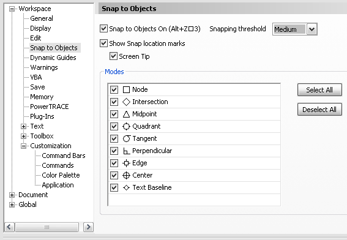
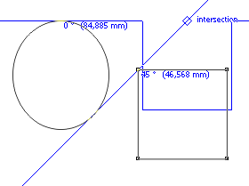

Собственно, если есть идеи, из которых получатся полезные макросы, излагайте. :)
Zeram / 28.09.2009, 17:17
Прозрачность мэшем :)
Sancho / 28.09.2009, 18:42
Zeram, это из ряда эффектов и к сожалению реализовать такое не получится, покрайней мере пока что.
Zeram / 28.09.2009, 23:49
Тогда режим привязок точек как в Автокаде - к середине или концу отрезка, к квадранту или центру окружности, по касательной и т.п., в общем весь набор привязок. Я в своё время юзая Автокад сильно к етому привык и в Кореле сильно не хватает таких точных привязок. Например надо точку поставить точно именно на имеющуюся линию, а как? Вот бы и забубенить такую панельку с привязками.
Sancho / 29.09.2009, 00:32
Zeram, а Snap To Objects для чего? :)
Zeram / 29.09.2009, 08:09
А мне надо чтоб не всё гамузом включалось "к объектам", а выборочно.
Sancho / 29.09.2009, 13:23/13:50
На самом деле не совсем понимаю, имхо вот стандартных возможностей выше крыши:
Тогда лучше командную строку создать! Указываешь координаты х,у и Corel сам рисует, исходя из этих координат, ну как в AutoCad-e!
Есть одна идея! Создать инструмент заливки, который после каждого применения осветляется или затемняется в зависимости от указанного коифицента (допустим 15%), главное чтобы он не сбрасывался, пока не выбрал другой инструмент. Если он и с мешами так будет работать еще лучше! Про изменения с нажатым Ctrl знаю, по этому главное коифицент!
Хотя, будет ли он полезен?!
Sancho / 29.09.2009, 16:44/16:46
Des425, Да вот я что то сомниваюсь в полезности этой фишки :D
Один клиент мне предлагал сделать сепарацию прям в документе корела. Не просмотр как у макроса Диззи, а именно сепарацию, раскидывая её на разные слои или страницы. Нужно такое? Я вот сколько не думал, немогу придумать зачем она :D
Des425 / 29.09.2009, 17:05/17:24
Может тот парень не знает о существовании в Corle Print separations in color А на разные слои или страницы, меня тоже в тупик завело!
Может он хотел такую процедуру с помощью макроса делать: Напечатать в PDF формат (Print separations in color), затем опять а Corle открыть, и все по страницам или по слоям раскидать! Но зачем это нужно тоже не пойму!
А может этот парень верстает книгу о цветоделении в Corle! :D
Des425 / 07.10.2009, 14:37
Еще одна идея макроса!
В Корле есть функция поиск объектов по выделенному образцу! Так вот, в чем смысл макроса! Что бы он не просто находил объекты, а группировал то что попадает в его область!
Допустим у нас 200 карточек стандартного размера (разгруппированных и стоящих в притык) Приходиться выделять каждую карточку по отдельности, группировать и отодвигать в сторону что бы не задеть при выделении следующего! Макрос поможет облегчить эту процедуру!


К тому же есть динамическое отключение снапинга прямо во время действия (динамическое отключение Snap).
В любом случае, видимо, идёт недопонимание возможностей ВБА (макросов).
Указываешь координаты х,у и Corel сам рисует, исходя из этих координат, ну как в AutoCad-e!
Есть одна идея!
Создать инструмент заливки, который после каждого применения осветляется или затемняется в зависимости от указанного коифицента (допустим 15%), главное чтобы он не сбрасывался, пока не выбрал другой инструмент. Если он и с мешами так будет работать еще лучше!
Про изменения с нажатым Ctrl знаю, по этому главное коифицент!
Хотя, будет ли он полезен?!
Один клиент мне предлагал сделать сепарацию прям в документе корела. Не просмотр как у макроса Диззи, а именно сепарацию, раскидывая её на разные слои или страницы. Нужно такое? Я вот сколько не думал, немогу придумать зачем она :D
А на разные слои или страницы, меня тоже в тупик завело!
Может он хотел такую процедуру с помощью макроса делать:
Напечатать в PDF формат (Print separations in color), затем опять а Corle открыть, и все по страницам или по слоям раскидать!
Но зачем это нужно тоже не пойму!
А может этот парень верстает книгу о цветоделении в Corle! :D
В Корле есть функция поиск объектов по выделенному образцу!
Так вот, в чем смысл макроса!
Что бы он не просто находил объекты, а группировал то что попадает в его область!
Допустим у нас 200 карточек стандартного размера (разгруппированных и стоящих в притык)
Приходиться выделять каждую карточку по отдельности, группировать и отодвигать в сторону
что бы не задеть при выделении следующего! Макрос поможет облегчить эту процедуру!
Страницы